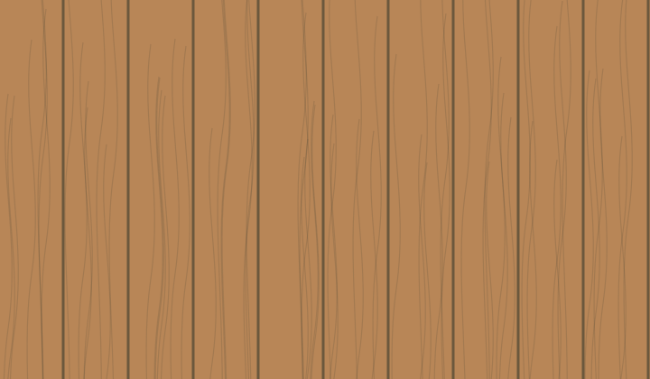

Natural timber cladding
Warm timber, visible grain and vertical lines.
Care & things to consider
Uncoated timber changes colour as it weathers. Exposure and shade can make that change uneven.
Choose the timber species and decide whether you want it to weather or keep a coated finish.